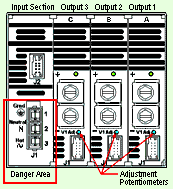
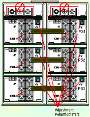
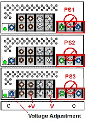
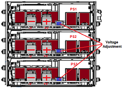

Power Supply Operating Principles
Purpose
This document details the operating principles for the power supply.
Module Function
The main power supply provides +24 V DC power for the instrument.
Location
The power supply is located behind the lower right front access door.
Operational Overview
The power supply provides three 24 V DC outputs for the instrument. The outputs connect to the power distribution PCB that distributes the power through individually fused channels to various instrument modules. Each 24 V output is monitored by the data acquisition board.
Other voltages used for instrument operation are created on:
- CPU Power Distribution PCB.
- Power Distribution PCB.
- Ultrasonic PCBs.
- MCC PCBs.
- Reagent Storage Interface PCB.
- DAQC PCB.
- RF Level Sense PCB.
| Power Supply Section | Circuits Powered |
|---|---|
| 24V_1 | Peltier cooler power and drive and CPU power distribution PCB.
Note: The Peltier drive circuitry is located on the power distribution board, with the PWM signal provided from the COMC PCB.
|
| 24V_2 | Provides power for upper right card cage including MCC boards and dual ultrasonic boards. |
| 24V_3 | Power for sample Peltier, various heaters, interface PCBs, and any other 24 V devices.
Note: The Peltier and heater drive circuitry is located on the power distribution board, with the PWM signal provided by the COMC PCB.
|
Drawings




Inputs and Outputs
The Magnetek brand power supply has:
- An input section (90 to 264 V AC).
- Three output sections (+24 V DC).
- Each 24 V output:
- Is adjustable. Refer to the Electronics: Adjusting Main Power Supply Voltage procedure.
- Contains a green LED indicating +24 V DC output (no LEDs on Cosel power supply).
- Each 24 V output:
The old Cosel brand power supply has two modules connected by bussbars.
- Each module provides three 24 V DC outputs and has:
- An input section (100 to 240 V AC).
- Three output sections (+12 V DC).
- Each 12 V output is adjustable. Refer to the Electronics: Adjusting Main Power Supply Voltage procedure.
The new Cosel brand power supply has three modules.
- Each module provides a direct 24 VDC output.
- Each module has an input section (100 to 240 VAC).
- Each 24 V output is adjustable. Refer to the Electronics: Adjusting Main Power Supply Voltage procedure.
The new TDK brand power supply has three modules.
- Each module provides a direct 24 VDC output.
- Each module has an input section (100 to 240 VAC).
- Each 24 V output is adjustable. Refer to the Electronics: Adjusting Main Power Supply Voltage procedure.
Monitoring
Power supply monitoring includes these features:
- All supply voltages are monitored. Supply voltages are visible in the user interface by selecting .
- Voltages outside acceptable tolerance limits are displayed in red to distinguish them from voltages that are within tolerance limits.
Connections
The power supply connects to:
- Power switch at the input (Magnetek power supply connects to the power conditioner, and the power conditioner is connected to the power switch).
- Power Distribution PCB at the output.